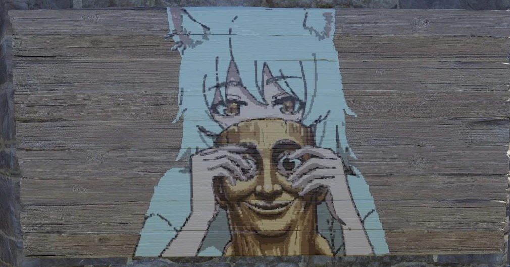
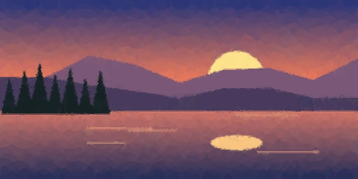
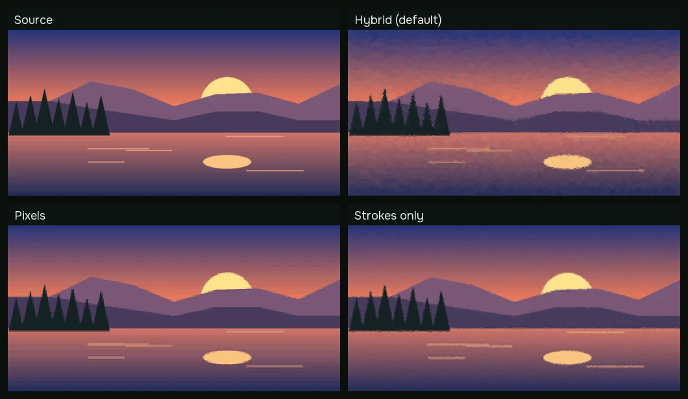
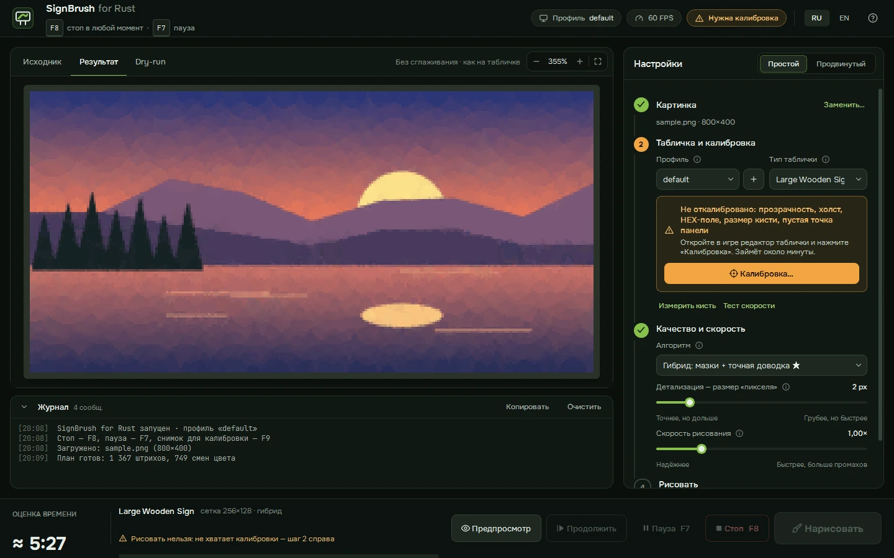

Гибрид
~1000 полупрозрачных мазков быстро закрывают холст, затем квадратная кисть дорисовывает только клетки, где цвет ещё отличается от нужного.
точность
скорость
SignBrush сам водит мышью в редакторе таблички и рисует ваш арт: крупные полупрозрачные мазки, потом точная доводка по пикселям. Обычно 2–10 минут вместо часа ручной работы.
Настоящий скриншот из Rust: табличка на стене. Нажмите, чтобы посмотреть кадр целиком.

Потяните разделитель. Справа — то, что SignBrush нарисует в игре в режиме «гибрид»: мазки закрывают плавные места, а детали дорисовываются точно.

Исходник Табличка~1000 полупрозрачных мазков быстро закрывают холст, затем квадратная кисть дорисовывает только клетки, где цвет ещё отличается от нужного.
Каждая клетка сетки получает ровно свой цвет: точная копия с палитрой, подобранной под картинку. Самый аккуратный и самый долгий режим.
Картина целиком из полупрозрачных кругов — мягкий «живописный» вид без мелких деталей, один клик на мазок.

PNG, JPG, GIF, WebP или прямо из буфера обмена. Сразу видно, как она ляжет на табличку.
Откройте редактор таблички, нажмите F9 и отметьте холст, HEX-поле и кисть на замороженном снимке. Около минуты на разрешение экрана.
Программа ставит пару пробных точек, проверяет их по скриншоту и подбирает паузы под ваш FPS — без щелей и «хвостов».
Переключитесь в игру за время отсчёта и не трогайте мышь. F7 — пауза, F8 — стоп. После рисования снимок сверяется с планом и пропуски дорисовываются.

Только снимок экрана и эмуляция ввода. Никакого чтения памяти игры, хуков, драйверов и обхода античита.
Аварийная остановка за миллисекунды, даже посреди штриха: кнопка мыши сразу отпускается.
Сдвинули мышь или переключились из Rust — рисование замирает. Прогресс сохраняется.
Ни аккаунтов, ни телеметрии, ни слежки за игроками. Код открыт под лицензией MIT.
SignBrush пока не полностью оптимизирован: на одних компьютерах он рисует идеально, на других игра пропускает штрихи или нужна ручная подстройка скорости. Каждый отчёт помогает сделать настройку автоматической.
Гарантий нет. SignBrush не трогает память игры и только эмулирует мышь, но правила конкретного сервера могут запрещать автоматизацию. Используйте на свой риск и уточняйте правила сервера.
Игра принимает движение мыши раз в кадр, поэтому время почти напрямую зависит от FPS с открытым редактором таблички. При 144 FPS рисование примерно вдвое быстрее, чем при 60. Запустите «Тест скорости» — он подберёт паузу сам.
Деревянные таблички всех размеров, рамки для картин, баннеры и неоновые вывески. Тип можно выбрать вручную или взять пропорции прямо с холста на экране.
Да. Прозрачные места и поля можно не закрашивать — тогда останется то, что уже было на табличке, а рисование станет быстрее.
Нет. Программа вообще не обращается к сети: всё считается на вашем компьютере.
Бесплатно, с открытым кодом, для Windows 10 и 11.
Скачать для Windows